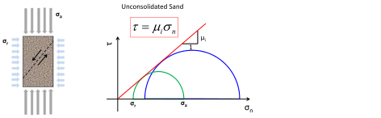

- The following data presents the results of triaxial tests performed on a dry samples of cohesionless fine sand from the Frio formation in the Gulf of Mexico Basin:
| |
|
|
Confining pressure |
Pore pressure |
Peak deviatoric stress |
 [MPa] [MPa] |
 [MPa] [MPa] |
[MPa] |
| 3.4 |
0 |
7.1 |
| 6.9 |
0 |
20.6 |
| 10.3 |
0 |
29.7 |
- Plot the maximum principal effective stress
 as a function of
as a function of  for the three experiments. Fit a line that goes to the intercept (0,0) and calculate the shear strength parameter
for the three experiments. Fit a line that goes to the intercept (0,0) and calculate the shear strength parameter  .
.
- Replot the data as Mohr circles, calculate the shear angle
 and plot the shear yield line. Does the shear yield line intersect the Mohr circles?
and plot the shear yield line. Does the shear yield line intersect the Mohr circles?
- The file Triaxial-1500psi-raw.dat (uploaded to Github) contains data from a triaxial test performed on a sandstone in dry conditions ( = 0 psi). is the confining pressure,
 is the deviatoric stress (),
is the deviatoric stress (),  is the axial strain, and is the radial strain.
is the axial strain, and is the radial strain.
- Plot deviatoric stress and strains as a function of time (two plots). Mechanical experiments are usually performed at constant strain rate or constant stress rate. Which case is this? What is the rate?
- Plot deviatoric stress as a function of axial strain. Compute loading Young modulus at 25% of the peak stress and the unloading Young moduli for the two unloading cycles. Comment on the difference.
- Plot radial strain versus axial strain and compute loading Poisson ratio.
- Plot deviatoric stress versus volumetric strain. Does the sample contract, dilate, or both? Explain.
- If the shear strength parameter is , what is the
 of this rock?
of this rock?
- Twelve triaxial tests on cylindrical plugs of Berea Sandstone are reported below (Bernabe and Brace, 1990 - The Brittle-Ductile Transition in Rocks, Geophys. Monogr. Serf. Vp, 56, 91-101). (*) This is the axial stress that a load cell measures inside a pressurized vessel (). For example, the value would be zero for hydrostatic loading (
).
| |
|
|
Confining pressure |
Pore pressure |
Peak deviatoric stress |
| [MPa] |
[MPa] |
[MPa] |
| 10 |
0 |
116 |
| 50 |
0 |
227 |
| 20 |
8 |
119 |
| 45 |
8 |
183 |
| 60 |
8 |
206 |
| 75 |
8 |
228 |
| 50 |
37 |
120 |
| 50 |
32 |
141 |
| 90 |
64 |
161 |
| 90 |
55 |
187 |
| 130 |
96 |
186 |
| 130 |
84 |
207 |
- Plot all data points in a versus plot and draw respective Mohr Circles (in Matlab, Python or Excel).
- Fit the data to Mohr-Coulomb criterion to compute unconfined compressive strength and the parameter through a linear regression. Then, calculate the cohesive strength and internal friction coefficient
 .
.
- Based on this information, compute the failure angle of the shear fracture you would expect to see in this sample after failure. Draw a sketch indicating the orientation with respect to the axial and radial stress.
- Did pore pressure significantly change the effective stress failure criterion?
Hint: figure out first how to calculate the effective radial and axial stresses.